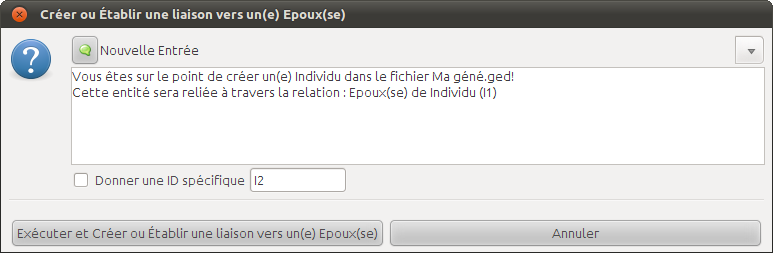

Saisir des individus
Construire une généalogie créer les premiers individus, sa famille , etc :
- Voici quelques conseils concernant l'ordonnancement des juridictions.
Pour saisir un lieu : saisissez les juridictions par ordre croisant en les séparant par une virgule, si un niveau est inconnu ou non encore renseigné, conservez la virgule.
Depuis la fenêtre de l'arbre, un clic droit avec sa souris sur le cadre de celui-ci.
Dans le menu déroulant, descendez sur "Individu I...". Là un nouveau sous-menu apparaît.
Déplacez votre souris dans ce sous menu, et choisissez, "Créer ou établir une liaison vers un(e) époux(se)"
La fenêtre "Créer ou établir une liaison vers ..." s'ouvre.
En haut de celle-ci, vous avez une ligne (qui est un menu déroulant) qui affiche : "Nouvelle Entrée".
Sous cette ligne-menu, un texte figure dans la partie centrale,Astuce : il pourra vous aider par la suite, notamment pour éviter de faire des erreurs.
En dessous, vous avez une case à cocher, et un libellé "Donner une ID spécifique". Ne cochez pas la case, elle est réservée à ceux qui maîtrise parfaitement le GedCom, c'est le numéro d'ID (identification) qui va être donné à la personne qu'on va créer.
Ne changez rien, laissez les choses telles qu'elles sont.
Cliquez sur "Exécuter et créer ou Établir une liaison vers un(e) Époux(se)" pour créer ce conjoint.
Si non vous pouvez annulez, en cliquant sur le bouton approprié.
Dans la fenêtre de l'arbre généalogique positionnez-vous sur la case famille sous les deux parents.
Faites un clic droit. Un petit menu s'ouvre avec plusieurs lignes. Mettez vous la cinquième "Famille F..." un sous-menu apparaît.
En haut de celui-ci vous avez "Créer ou Établir une liaison vers un fils" et "Créer ou Établir une liaison vers une fille".
Cliquez sur la ligne qui vous convient.

Une fenêtre apparaît très proche de celle que nous avons vu pour la création du conjoint.
Tout en haut, vous avez une ligne / menu déroulant. Pour le moment, vous voyez exactement ce qui est sur la capture d'écran, à savoir "Nouvelle Entrée".
Sous cette ligne-menu, un texte figure dans la partie centrale.
Astuce : Il pourra vous aider par la suite, notamment pour éviter de faire des erreurs.
Plus bas, vous avez une case à cocher libellé : "Donner une ID spécifique".
Ne cochez pas la case, elle est réservée à ceux qui maîtrise parfaitement le GedCom, c'est le numéro d'ID (identification) qui va être donné à la personne qu'on va créer. Vous devriez voir "I...n+3". Ne changez rien, laissez les choses telles qu'elles sont.
Astuce : Le paramétrage de l'ordre des Numéro ID se fait dans préférences/Données/Autres.
Enfin, tout en bas, vous avez deux boutons, dont l'un sera à cliquer bien sûr, si vous êtes d'accord pour créer ce fils (ou cette fille). Si à l'inverse, vous pensez que vous avez fait une erreur, annulez, en cliquant sur le bouton approprié.
Créer un individu
Nom :
Nom de famille : le patronyme de l'individu
Prénom : le ou les prénoms de l'individu
Puis, cliquer sur "OK", en bas à droite de la fenêtre de l'éditeur.
Astuce : Si vous avez saisie plusieurs prénoms séparés par des espaces vous verrez apparaître après validation dans la ligne Prénom chacun des prénoms séparés par une virgule, ceci est tout à fait normal, Ancestris réécrit cette ligne pour la mettre "à la norme Gedcom". Vous verrez que votre individu est "correctement" écrit sans virgule : dans l'arbre comme dans l'intitulé de l'éditeur Ancestris
Pour aller plus loin vous pouvez paramétrer les espaces dans préférences/Données/Données/Nom.
Astuce : Pour saisir les variantes du nom d'un individus voir : FAQ : Un individu est connu sous plusieurs patronymes
Naissance :
La date : Jour / mois / année.
Puis, cliquer sur "OK" pour prendre en considération vos ajouts.
Astuce : On passe au champ suivant, on clique sur la touche tabulation, ou l'on utilise sa souris.
Astuce : Pour le mois vous pouvez saisir dans le champ :"7" Ancestris le convertira en "Juillet" !
Le lieu de naissance :
Au préalable il est recommandé d'adopter un ordre des juridictions universel et homogène !
cf. l'ordonnancement des juridictions des lieux selon la norme Gedcom
Cliquer sur "OK" pour prendre en considération vos ajouts.
Astuce : Ancestris vous propose d'utiliser 7 niveaux de juridictions :
Lieudit,Commune,Code_INSEE,Code_Postal,Département,Région,Pays
Ainsi vous augmentez les chances que votre lieu soit géolocalisé sur la carte.
Astuce : Pour vous aider à renseigner un lieu vous pouvez séparer les juridictions en plusieurs champs dans Préférences / Apparence / Edition
Décès :
Pour la date et le lieu procédez de la même manière que pour les données sur la naissance.
N'oubliez pas de cliquer sur "OK" après chaque ajout.
Astuce : Pour les lieux identiques : Ancestris vous aide à la remplir grâce à la fonction auto-complètement de champ. Pendant votre saisie s'ouvrira un menu déroulant vous proposant les lieux commençant par la même chaîne de caractères que vous avez déjà utilisé dans votre généalogie. Cette fonction est utilisable également quand les juridictions sont séparées et ne complète que la juridiction que vous saisissez.
A ce stade où nous en sommes, je vous conseille de sauvegarder votre travail.
Donc à partir de l'Explorateur Gedcom ou vous faites "Fichier", "Sauvegarder".
Créer un conjoint
Création d'une entité liée/conjoint
Pour créer le conjoint d'un individu :
En résumé, lorsque cette fenêtre apparaît, vous n'avez rien à faire si ce n'est de cliquer sur le bouton "Exécuter et Créer ou Établir une liaison vers un(e) Époux(se)".
Il vous faut cliquer et confirmer la création du conjoint.
Saisi des informations sur le nouvel individu
Vous allez immédiatement voir apparaître dans la fenêtre de l'arbre généalogique la case du conjoint créé. Dans le même temps, la fenêtre de l'éditeur change, et se positionne sur la personne nouvellement créée pour vous permettre de rentrer les données. sur le conjoint.
La méthodologie est exactement la même que ci-dessus.
Astuce : Vous aurez aussi noté que le patronyme peut-être déjà servi avec le nom du conjoint.Le choix d'attribuer le patronyme du conjoint se paramètre dans préférences/Données/Données/ Patronymes.
N'oubliez pas, comme précédemment, de cliquer sur "OK" lorsque vous avez entré les données. Cela valide vos ajouts.
Là encore, à la fin de cette saisie, vous enregistrez votre travail, faites "Fichier", "Sauvegarder" ou via le bouton de la barre d'outil.
Créer une famille
Nous venons de créer individu, une "entité" selon le langage Gedcom, et son conjoint, donc une autre entité, mais en généalogie il y a une autre "entité", une autre individualité, qui s'appelle "la famille", et elle, doit être complétée, généalogiquement parlant.

Dans la fenêtre de l'arbre généalogique, Vous avez trois cases, l'une pour le premier individu, l'autre pour son conjoint, et une troisième sous les deux premières, c'est la case correspondant à la famille. Son identification (une ID) de "F...".
Remarque : Il est possible que vous ne voyez pas grand chose, car le cadre est mal dimensionné, les informations ont l'air d'avoir disparu, etc..
Vous pouvez personnaliser l'affichage de la vu Arbre en agissant sur le zoom, ou en personnalisant ses paramètres d'affichage, soit en choisissant et en personnalisant un Calques.
Cliquez sur ce cadre : "F..." :
Dans le menu de l'éditeur, les choses ont changé. Maintenant vous vous retrouvez avec de nouvelles informations à renseigner.
La date du mariage
Rien de particulier que nous n'ayons déjà rencontré. Reportez-vous à la rubrique de saisie d'une date dans Saisie d'un individu.
Le lieu du mariage
Là aussi rien de particulier. Reportez-vous à la rubrique de saisie des lieux dans Saisie d'un individu.
En dessous du champ "lieu de mariage", un champ qui s'appelle "nombre d'enfants" ne le renseigner que si vous êtes sûr que ce couple a eu un nombre d'enfants différent de ceux que vous créerez.
N'oubliez pas, comme précédemment, de cliquer sur "OK" lorsque vous avez entré les données. Cela valide vos ajouts.
Là encore, à la fin de cette saisie, vous enregistrez votre travail, donc faites "Fichier", "Sauvegarder".
Créer un enfant
Nous avons vu comment créer un individu, son conjoint et leur mariage (ou famille). Nous allons à présent leur créer un enfant.

En résumé : lorsque cette fenêtre apparaît, vous n'avez rien à faire si ce n'est de cliquer sur le bouton "Exécuter et Créer ou Établir une liaison vers un fils" ou "une fille".
Il vous faut cliquer et confirmer la création de l'enfant.
Vous allez immédiatement voir apparaître dans la fenêtre de l'arbre généalogique la case de l'enfant du couple. Dans le même temps, la fenêtre de l'éditeur change, et se positionne sur la personne nouvellement créée pour vous permettre de rentrer les données.
Vous cliquez sur la case "Prénom" de l'éditeur. On va entrer les données de l'enfant.
Vous remarquerez que le sexe est déjà servi en fonction de ce que vous avez choisi.
Astuce : Si vous avez commis une erreur sur son genre changez en cliquant sur le bon bouton.
Au passage notez que vous pouvez utiliser cette méthode pour créer un enfant dont vous connaissez l’existence mais pas ses prénoms ni son sexe. Pour ce dernier vous cocheriez "Inconnu".
Vous aurez aussi noté que le patronyme est déjà servi avec le nom du père.
Pour le reste la méthodologie est exactement la même que lorsque nous avons rentré les données du premier Individu.
N'oubliez pas, comme précédemment, de cliquer sur "OK" lorsque vous avez entré les données. Cela valide vos ajouts.
Là encore, à la fin de cette saisie, vous enregistrez votre travail, donc faites "Fichier", "Sauvegarder", ou via les raccourcis clavier "Ctrl +S"
Créer des ascendants

Nous allons maintenant nous attacher à créer les parents d'un individu. Nous allons le faire à partir du premier individu créer.
Positionnez-vous dans l'arbre sur la case de celui-ci. Faites clic droit, descendez sur la ligne "Individu I...", allez ensuite sur "Créer ou établir une liaison vers un parent" et validez.
Le père
Vous voyez dans la fenêtre d'édition que le patronyme du père est déjà servi.
Complétez les cases adéquates pour celui-ci comme vous savez maintenant le faire.
Dans la fenêtre de l'arbre vous constatez vos modifications.
N'oubliez pas, comme précédemment, de cliquer sur "OK" lorsque vous avez entré les données. Cela valide vos ajouts.
Là encore, à la fin de cette saisie, vous enregistrez votre travail, donc faites "Fichier", "Sauvegarder".
La mère
Positionnez-vous sur la mère de l'individu et complétez les différents champs comme vous y êtes habitué.
Astuce : Vous pouvez paramétrer l'ajout systématiquement d'un conjoint dans préférences/Données/Données/ Personnes.
N'oubliez pas, comme précédemment, de cliquer sur "OK" lorsque vous avez entré les données.
Cela valide vos ajouts.
Là encore, à la fin de cette saisie, vous enregistrez votre travail, donc faites "Fichier", "Sauvegarder".
La Famille des ascendants
Une fois de plus, vous pouvez aussi compléter les informations sur la famille que forme le père (I...) et la mère (I...). Cliquez sur la case de la famille qui se situe au niveau de l'arbre, au dessus de l'individu et juste en dessous des parents de celui-ci. La famille a le numéro d'identification "F...". Si donc vous connaissez leurs date et lieu de mariage, allez-y.
Faites comme précédemment expliqué au paragraphe Créer une Famille.